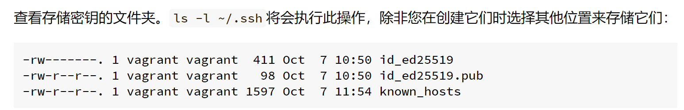
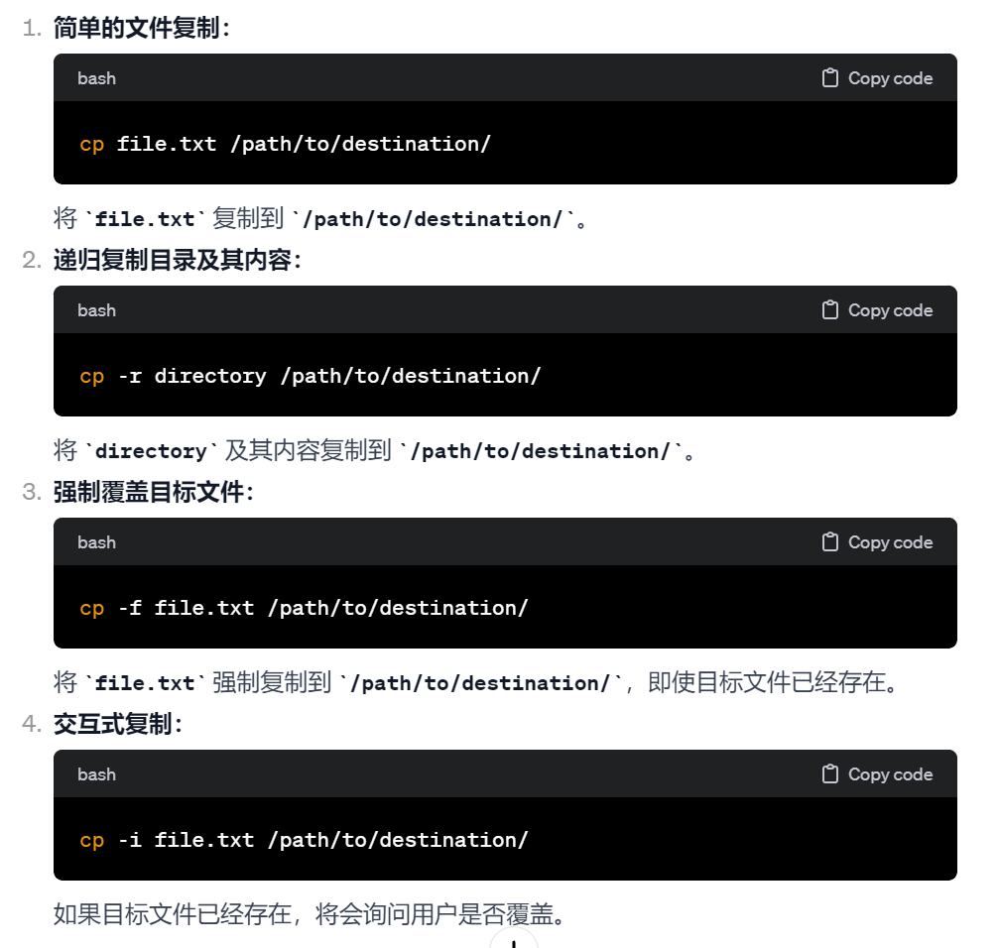
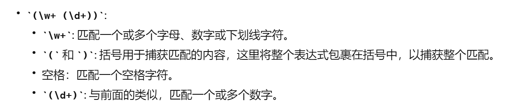
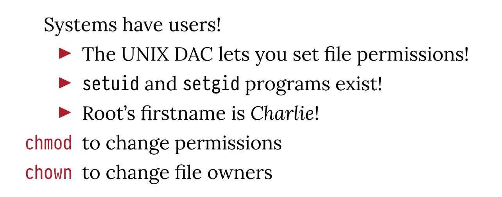
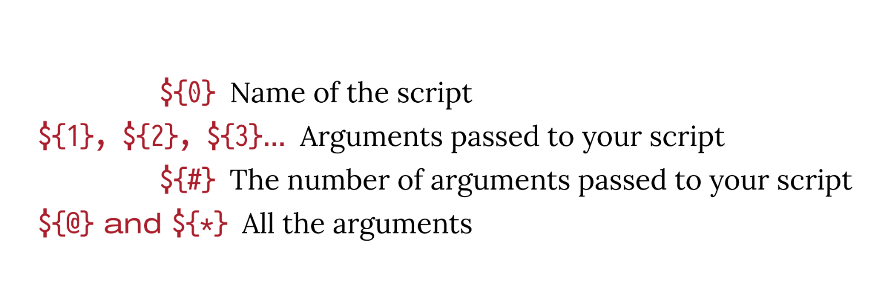

安全外壳 (SSH) 是一种允许您远程登录另一台计算机（例如实验室机器）的协议。几乎每个使用 SSH 的人都使用免费的 OpenSSH 实现
uname -a这个命令通常用于显示操作系统的名称
whoami
ssh -Jjump through this host,跳板连接是一种通过一个中间主机（跳板主机）来连接目标主机的方法，通常用于通过内部网络或防火墙访问无法直接连接的主机。创建：ssh keygen  /home/if23696/.ssh/id_ed25519
所以本地有三个东西：一个秘钥，一个公钥，一个known_hosts（ OpenSSH 中用于存储远程主机的公钥信息的文件。当你首次连接到一个远程主机时，OpenSSH会将该主机的公钥信息保存在你的 ~/.ssh/known_hosts 文件中。这样，下次连接到相同的主机时，OpenSSH 将检查该主机的公钥是否与 known_hosts 文件中存储的相匹配。） 3. 在 SEIS 上设置密钥访问
ssh -A -J USERNAME@seis.bris.ac.uk USERNAME@rd-mvb-linuxlab.bristol.ac.uk
4. 设置配置文件
scp-secret copys:用于在 Unix-like 操作系统之间安全地复制文件的命令。它是基于 SSH 协议的，因此提供了加密的数据传输和身份验证。scp 的名称代表 "Secure Copy Protocol"
如果有:这个东西，说明是另一个主机的地址
复制以过去之后将内容复制到authoriz_key文件中
chmod 600->八进制->110 000 000-> rw- --- ---
虚拟机 需要有一个Vagrantfile ssh默认使用的是22端口，但是ssh默认使用的是2222端口 Vagrant Box有默认的private key和secret key，一个新的默认更新一个
aptadvanced package tool
sudo apt update只是下载最新的package的清单，但是不安装任何东西
sudo apt upgrade将所有已安装的package更新到最新版本
sudo apt install PACAKGE PACKAGE安装
dpkg-query -S /bin/bashDebian系统及其衍生系统（
然后给你讲一下linux系统
ls /列出根目录的东西
/binbinary，都是各种系统指令， 小小的提了一嘴
小小的提了一嘴which:用于查找并显示指定命令的绝对路径。具体而言，它会告诉你系统中关于某个命令的执行文件所在的位置。一般都是系统层面的指令，比如说mv，ls这种最基本的
比如说which ls
和pwd不同的是，pwd主要是当前所在位置，find是查找文件，然后which是查找指令

/usr存放用户安装软件以及系统共享资源的重要目录。和用户相关，但是基本都是只读文件
提到了绿色的是可执行文件，蓝色的是指向其他文件的soft link
所以这里提到了软连接和硬链接
inode：inode 是文件系统中的一个概念，用于表示文件或目录的元数据信息。每个文件或目录在文件系统中都与一个唯一的 inode 相关联。inode 记录了文件或目录的诸多属性，但不包括文件名或路径。
/etc系统层面的configuration file，然后基本是只有root用户可以更改
/libdynamic-libraries，比如windows的.dll,linux系统的.so
/home用户的home文件夹
/sbinsystem binaries，只有root用户能用？
/tmp系统文件，但是在RAM里不在disk上，所以重开机的时候会消失
/varlogs，caches，这种存在很久的文件
/dev /sys /proc虚拟文件系统？“虚拟”是指 /dev、/sys 和 /proc 这些目录并非存储在硬盘上，而是在内存中动态生成的，它们是内核为用户和应用程序提供的一种抽象
Shell：CMD？Powershell？
prompt：用户输入提示
但实际上
$确实是Linux相关的
>:在‘’中换行
builtin commands:
 which cd是
which cd是
一些flag什么的
-l：长格式显示信息
-a：显示所有文件，包括一些. .. 是隐藏文件
会列出各种flag代表什么意思
Manuals：
实际上是查看手册
Shell Expansions:
*:匹配零个或多个字符
比如说：ls *.txt匹配所有.txt开头的文件
ls *abc匹配所有abc开头的文件
（所以*的位置和开头结尾有关）?匹配一个字符
有点不确定字符的意思，可以是任何？[ab]单个字符范围匹配
$变量my_variable="Hello"
echo $my_variable
Shell Quoting
"Double Quotes"字符被原样输出，特殊字符被解释
'single Quotes'turn Off everything：所有东西都会被原样输出
\* \? \[ \$Do not treat as pattern
特殊字符不作为特殊字符处理
cp mv find echo cp: copy  mv:move find:search
echo:print

whitespace: 意思就是，只有在“”里面，space也算 Pattern matching: 列出所有的文件 只显示了*，"empty" 文件夹为空，因此 ../arguments * 命令在该文件夹中执行时，shell 将 * 视为一个参数，而不是展开为文件名列表。
find three different ways to get the program to produce the following output:
Argument #0: [./arguments]
Argument #1: [*]
Files with spaces in their names
touch "Silly named file"->创建一个文件夹？
touch Silly named file->创建3个文件 Silly named file
ls sill+tab：

rm:
rm sill+tab
或者
rm "silly named file"
Shell variables
注意：
上面那个无法编译，因为被视作silly, name.c
意思就是，在program赋值和后续调用的时候都需要用到“”
其实还是讲过unix philosophy的：
1.每个program都应该do one thing well
2.programs 可以联合起来完成更大的tasks
3.universal interface shoulder be a text stream（文本流，是一种将文本数据视为连续流动的概念。Unix系统的设计哲学之一是将简单的工具通过标准输入（stdin）和标准输出（stdout）连接起来，形成一个数据处理管道。）
讲下标准输入和标准输出：
在计算机科学中，管道（Pipe）是一种用于在两个进程之间传递数据的机制。它允许一个进程的输出（stdout）直接成为另一个进程的输入（stdin），从而使这两个进程协同工作。

pipe是将一个文件的输出变成另一个文件的输入
> >> <这些重定向（redirection）是将输出等追加到文件或者作为输入
错误输出
COMMAND > FILE 2> FILE2将COMMAND的标准输出到FILE，然后错误输出到FILE2
COMMAND>FILE 2>&1COMMAND的标准输出定向到FILE，然后错误也定向到&1所在的文件
COMMAND >>FILE 2>&1COMMAND指令的标准输出和标准输入都到FILE中，但是不覆盖
但是，这个是错的COMMAND 2>&1>FILE没有先规定1到哪，所以是从左到右顺序（？
COMMAND > /dev/nullignore output
FILES and STREAMS
PROGRAM > FILE 标准输出到FILE
PROGRAM >> FILE标注输出到FILE但是不覆盖
PROGRAM <FILEFILE作为标准input给COMMAND执行
PROGRAM 2> FILE标准错误输出到FILE
还有一个subshell：
COMMAND $(SOMETHING)
Pipes
列出头/尾巴
ls -1 | head从头开始列
ls -1| head -n 6从头开始列，列6个结束
ls -1 | tail
grep sort uniq
tee 感觉像是又保存到另一个文件夹里，又print到屏幕上 less 在shell中打开某个文本 sed 替换替换 用表达式s/ONE/TWO/[g] 没有g只是替换第一个匹配到的，有了g就是全局替换 subshell
If English is not your native language, ignore the guessing part - it is not assessed.
sed -n '6171p' words
sed 's/q/Q/g' words
sed -i 's/q/Q/g' your_file.txt
不像显示打印就是这样

grep '^X' words
sed -n '/^X/p' words
-n指只打印匹配行
-i指不显示打印
s/[]/[]/gs：替换; g：全局替换(global)
/^[]/p^：是指开头是什么；p：打印(printf)

grep 'j$' words
sed -n /j'$'/p words
grep -i 'q' words|wc -l
-i 忽略大小写ignore
-o 仅输出匹配部分only
grep 'cl' words|head -n 5
查找：grep
grep 'kp' words|grep -v 'ckp'
-v代表反向匹配（指排除？）
The last 15 words of exactly two letters. The expression . (period) matches a single character, and '^...$' for example would match all strings of the format exactly three characters between start and end of string. You need to quote it because of the dollar sign.
grep '^..$'|tail -n 15
一个.代表一个字符
All words from the first 100 words on the list, which contain the letter y.
cat words|head -n 100|grep 'y'
cat words|head -n 100|grep 'y'
The first five words that are among the last 100 words on the list, and contain the letter y (whether capitalised or not).
tail -n 100|grep -i 'y'|head -n 5
tail -n 100 words | grep -i 'y' | head -n 5
All three-letter words with no vowels (aeiou).The regular expression '[aeiou]' matches any string that contains one of the bracketed characters; you need quotes to stop the shell from interpreting the brackets. Remember to exclude words with capitalised vowels as well. There are 343 of these.
grep '^...$' |grep -g -v `[aeiou]` words|wc -l
----22
grep -i -w -v '[aeiouy]' words | grep -w '^...$'|wc -l----536 ?????????
grep -Ei ^[^aeiou]{3}$ words
All words of exactly 7 letters, where the third one is an e and the word ends "-ded". This kind of search is really useful for crosswords. There are 14 words of this form, can you guess them?
grep -i -w '^..e....ded$' words-------4?????
grep -iE ^[a-z]{2}e[a-z]{1}ded$ words
Study the documentation for the -w option. Contrive a file such that grep PATTERN FILE returns two different lines but grep -w PATTERN FILE returns only one line. 就是 -w 是完全匹配，不加是部分匹配的意思
You'll have seen beforehand that you can count the results of a search with grep PATTERN FILE | wc -l. However, grep also has a -c option which counts matches. Can you find the situation where the wc -l approach and the -c approach produce different results? Can you explain why?
-c
wc -l统计的是行数
(????)但是实际输出是一样的哦
3. Some words have different spelling between British English and American English. For example, 'encyclopaedia' is valid in British English but not American. Can you write a regular expression that would match both of these words, but nothing else? How about matching both 'color' (American) and 'colour' (British)?
grep -E 'colou?r' ex3
^[A-Z]{2}\d{1,2} ?\d[A-Z]{2}$
^(([A-Z]{1,2}[0-9][A-Z0-9]?|ASCN|STHL|TDCU|BBND|[BFS]IQQ|PCRN|TKCA) ?[0-9][A-Z]{2}|BFPO ?[0-9]{1,4}|(KY[0-9]|MSR|VG|AI)[ -]?[0-9]{4}|[A-Z]{2} ?[0-9]{2}|GE ?CX|GIR ?0A{2}|SAN ?TA1)$.Try breaking apart this monster to understand what is being tested, and find an example that would match the schema described for the fourth question but fail to match this expression.
^(
([A-Z]{1,2}[0-9][A-Z0-9]?|ASCN|STHL|TDCU|BBND|[BFS]IQQ|PCRN|TKCA) ?[0-9][A-Z]{2}
|BFPO ?[0-9]{1,4}
|(KY[0-9]|MSR|VG|AI)[ -]?[0-9]{4}
|[A-Z]{2} ?[0-9]{2}
|GE ?CX|GIR ?0A{2}|SAN ?TA1
)$
 https://regexone.com/lesson/nested_groups 总之可以玩玩这个
git我个人理解大概就是一个版本控制的东西大概分为以下几类
老三套
git init初始化
git status检查状态
创建一个file.gitignore将想忽略的扔进去
git add .将所有变动的地方加到master branch里
git commit -m "Initial commit"添加comments
git log检查状态
git log|less记下退回状态的的hash数字
git checkout HASH
确实退回去了(?!!)这就是版本控制
git checkout masterto return to the latest version of your files, and git will set up the HEAD pointer again ready to accept new commits
Part 2: Git forges
ssh
git clone SSH
Practice the push workflow
rebase
merge 会有merge request 什么的
Resolve a fake conflict, part one
Fake conflicts, part two
Resolving a real conflict
实际上
git checkout -b NAME执行了两个操作，创建branch并且切换到对应的地方
更好记的话应该是 git branch

同时，git push -u origin NAME将branch和远程联系起来，但是更好记（
之后就可以美美git push和 git pull了

一开始是root：
 大概讲了下group、owner和others的东西，还有密码储存的位置
大概讲了下group、owner和others的东西，还有密码储存的位置
所以这个755是这么来的 weird bit 它上面提到过sticky point
韩顺平：


栗子 sudo groupadd police sudo groupadd bandit sudo useradd jack sudo useradd jerry sudo useradd xh sudo useradd xq sudo usermod -aG police jack sudo usermod -aG police jerry 或者这样： 修改权限就是usermod
小总结
useradd添加用户
groupadd添加组
usermod -g groupname username用户添加到组里
usermod -d reponame username用户初始登录文件位置
passwd设置用户密码
chgrp 组名 文件名修改文件所在的组
chmod 权限 文件修改权限
chown newowner file/repo改变文件或者目录的所有者
直接用unix系统做，需要在lab上跑一遍
vagrant up ->vagrant ssh
Create a user and a group
sudo adduser NAME加名字
创立新的user，设置密码，切换到该user下面
su ADA切换到ADA user下面
pwd检查确实在user/home/下面
exit回到host
然后再次创建一个，并添加到一个组里面
sudo addgroup USER添加组USER（反正addgroup和groupadd总有一个）
将ADA和brian扔到组里
这样就是一个组里了
Explore file permissions
 这个做的我好烦躁（
这个做的我好烦躁（
还讲了一下环境变量的东西，但是我觉得不一定是重点，考都没考x shellcheck vim xxx.sh ctrl+v:vision mode 光标选择+d
变量
unset是取消赋值
其他的比如$?是exit code，检查和输出错误信息
这个就是，0其实表示success，而大于0的是错误信息？
标准变量

if 判断语句
[]
case 跳转语句
https://missing-semester-cn.github.io/2020/shell-tools/
参考一下这个

写一个脚本called b 1.在各种shell里都通用的 2.compile NAME 一个C文件，同时接受hello.c 和hello 3.如果该文件不存在，则报错 4.run NAME 5.build NAME 6.COMMAND 或者./b 打印手册
#!/bin/sh
if [ $# -eq 0 ]; then
echo "Usage: $0 COMMAND [NAME]"
echo "Commands: compile, run, build"
exit 1
fi
command="$1"
name="$2"
case "$command" in
compile)
if [ -z "$name" ]; then
echo "Error: Missing filename for compile command."
exit 1
fi
if [ ! -f "$name" ]; then
if [ -f "$name.c" ]; then
name="$name.c"
else
echo "Error: Source file '$name' not found."
exit 1
fi
fi
gcc -Wall -std=c11 -g "$name" -o "${name%%.*}"
;;
run)
if [ -z "$name" ]; then
echo "Error: Missing program name for run command."
exit 1
fi
if [ ! -x "$name" ]; then
if [ -x "$name.c" ]; then
name="$name.c"
else
echo "Error: Program '$name' not found."
exit 1
fi
fi
./"$name"
;;
build)
if [ -z "$name" ]; then
echo "Error: Missing filename for build command."
exit 1
fi
./b compile "$name"
if [ $? -eq 0 ]; then
./b run "${name%%.*}"
fi
;;
*)
echo "Usage: $0 COMMAND [NAME]"
echo "Commands: compile, run, build"
exit 1
;;
esac
exit 0
这个主要看cheat sheet 写也可以？？？
这个我看都是在教安装（
主要是GDB
SELECT
选择多少列
AS
FROM
从哪个
WHERE
一个条件语句，标准日期是"YYYY-MM-DD"
AND OR NOT
BETWEEN:AND多项选择
IN:OR多项选择
USE sql_store;
SELECT *
FROM customers
WHERE quantity IN (49,38,72)
LIKE %：无论有多少个
REGEXP使用正则表达式
ORDER BY
LIMIT
USE sql_store;
SELECT *
FROM customers
WHERE customer_id=1
ORDER BY first_name
SELECT column1, column2, ...
FROM table1
JOIN table2 ON condition;
INNER JOIN：如果表中有至少一个匹配，则返回行 LEFT JOIN：即使右表中没有匹配，也从左表返回所有的行 RIGHT JOIN：即使左表中没有匹配，也从右表返回所有的行 FULL JOIN：只要其中一个表中存在匹配，则返回行
内连接
USE sql_store;
SELECT *
FROM order_items oi
JOIN sql_inventory.products p
ON oi.product_id=p.product_id
USE sql_hr;
SELECT e.employee_id,
e.first_name,
m.first_name AS manager
FROM employees e
JOIN employees m
ON e.reports_to=m.employee_id
USE sql_store;
SELECT
o.order_id,
o.order_date,
c.first_name,
c.last_name,
os.name AS status
FROM orders o
JOIN customers c
ON o.customer_id=c.customer_id
JOIN order_statuses os
ON o.status=os.order_status_id
注意这里的链接condintion，做了exercise才发现有哪里不对= =
还有一个natural join：就是让数据库自己检测 cross join：第一个表的所有，和第二个表的所有
SELECT
c.first_name AS customers
p.name AS product
FROM customers c
CROSS JOIN prodcuts p
ORDER BY c.first_name
USE sql_store;
SELECT
order_id,
order_date,
'Active' AS status
FROM orders
WHERE order_date >'2019-01-01'
UNION
SELECT
order_id,
order_date,
'Archived' AS status
FROM orders
WHERE order_date <='2019-01-01';
UNION：MySQL UNION 操作符用于连接两个以上的 SELECT 语句的结果组合到一个结果集合，并去除重复的行。 UNION 操作符必须由两个或多个 SELECT 语句组成，每个 SELECT 语句的列数和对应位置的数据类型必须相同
INT VARCHAR DATE CHAR
PK:primary key
NN:not NULL(选了就是不允许有null)
AI:自动增递
default/expression：NULL或者'0'
1.插入单行
INSERT INTO cutomers(
first_name,
last_name,
birth_date,
address,
city,
state
)
VALUE(
'Hannah',
'Smith',
'address',
'city',
'CA')
是有DEFAULT这个东西的,但是如果上面不写的话，实际上是可以去掉的，如果上面是这样的话 2. 插入多行
INSERT INTO shippers(name)
VALUES ('shippers'),
('shippers2'),
('shippers3')
LAST_INSERT_ID()
INSERT INTO orders_archived
--archived是一个新的表
SELECT *
FROM orders
WHERE order_date < '2019-01-01'
UPDATE invoices
SET payment_total=10,
payment_date='2019-03-01'
WHERE invoice_id=1
WHERE invoice_id =
(SELECT *
FROM clients
WHERE name='Myworks')
到他的第五章了，之后在慢慢看，现在开始做school的内容
CREATE TABLE IF NOT EXISTS student(
name TEXT NOT NULL,
number TEXT NOT NULL,
PRIMARY KEY(number)
);
CREATE TABLE IF NOT EXISTS unit(
name TEXT NOT NULL,
number TEXT NOT NULL,
PRIMARY KEY(number)
);
CREATE TABLE IF NOT EXISTS unit(
name TEXT NOT NULL,
number TEXT NOT NULL,
PRIMARY KEY(number)
);
但是打下来会报错是因为number作为主键没有设置大小）
USE <database>;切换到该数据库
SHOW TABLE;显示表格
DESCRIBE <TABLE>;查看具体类型
PRIMARY KEY：
UNI KEY唯一约束：
唯一约束确保一列或一组列中的所有值都是唯一的。
与主键不同，唯一约束允许包含NULL值（除非在受约束的列或列组中）
CREATE TABLE employees (
employee_id INT PRIMARY KEY,
email VARCHAR(255) UNIQUE,
department_id INT
);
MUL外键 外键是一个表中一列或一组列，它引用另一张表的主键。 它建立了两个表之间的链接，创建了一种关系。 它确保引用完整性，意味着外键列中的值必须与引用表的主键匹配。
CREATE TABLE courses (
course_id INT PRIMARY KEY,
course_name VARCHAR(255)
);
CREATE TABLE enrollments (
enrollment_id INT PRIMARY KEY,
student_id INT,
course_id INT,
FOREIGN KEY (student_id) REFERENCES students(student_id),
FOREIGN KEY (course_id) REFERENCES courses(course_id)
);
SELECT * FROM Candidate
JOIN Party ON Party.id=Candidate.party
JOIN Ward ON Ward.id=Candidate.ward
WHERE Ward.name='Bedminster';
Simplify:
SELECT Party.name FROM Candidate
JOIN Party ON Party.id=Candidate.party
JOIN Ward ON Ward.id=Candidate.ward
WHERE Ward.name='Bedminster';
 要的是votes，所以在Candidate里面选择votes
然后两个子查询：
条件1是：Party是Labour->Candidate的都是id，所以要在Party里面找 name='Labour'，并且返回对应的id
条件2是：Ward是Stockwood->Candidate的都是id，所以要在Ward里面找 name='Stockwood'，并且返回对应的id
要的是votes，所以在Candidate里面选择votes
然后两个子查询：
条件1是：Party是Labour->Candidate的都是id，所以要在Party里面找 name='Labour'，并且返回对应的id
条件2是：Ward是Stockwood->Candidate的都是id，所以要在Ward里面找 name='Stockwood'，并且返回对应的id还没扔进去看
SELECT Candidate.name, Party.name,Candidate.votes AS name,party,votes
FROM Candidate
JOIN Ward ON Ward.id=Candidate.ward
JOIN Party ON Party.id=Candidate.party
WHERE Ward.name='Southville'
ORDER BY Candidate.votes DESC;
SELECT Candidate.name, Party.name,Candidate.votes AS name,party,votes
FROM Candidate
JOIN Ward ON Ward.id=Candidate.ward
JOIN Party ON Party.id=Candidate.party
WHERE Ward.name='Knowle'
ORDER BY Candidate.votes DESC
LIMIT 1;
The university of Bristol is situated in the Cabot ward (ward names are not always distinct, but this one is). Find the names and codes of the CLU, region and country containing the Cabot ward (CLU = county level unit = "row in County table").
If you used multiple SQL queries for the last question, do it in one single query now. (In other words, find a join strategy for the tables you need.)
Find the number of women in occupation class 1 (managers etc.) in the Cabot ward. You may use ward code for Cabot that you found in the first query and the occupation id 1 directly - you do not need any JOINs for this query.
For the Stoke Bishop ward (E05002003), list the 9 occupation class names and the number of men in each occupation. Your table should have two columns called name and number. You can use the provided ward code, you do not need to join on the ward name.
Election
$ git fetch
ssh: Could not resolve hostname github.com: no address associated with name
fatal: Could not read from remote repository.
Please make sure you have the correct access rights
and the repository exists.
What is the issue?
A. Their public key has not been correctly set up on Github.
B. The repository doesn’t exist; they need to create it before they can pull;
C. There is a merge conflict
D. Their network is down or misconfigured.
The answer is D. Maybe because it has something to do with SSH A. fatal: repository 'repository_url' not found B. Permission denied (publickey). C. CONFLICT (content): Merge conflict in filename
When running a command into their favourite pager more (so they can scroll it on the
terminal) Alice notices the following unusual output. What is going on, and what are the
weird ESC[01;34m bits?
$ ls --color=always | more
ESC[0mESC[01;34mBackupsESC[0m
ESC[01;34mDesktopESC[0m
ESC[01;34mDocumentsESC[0m
ESC[01;36mDownloadsESC[0m
ESC[01;34mMailESC[0m
ESC[01;34mMusicESC[0m
ESC[01;36mNotesESC[0m
ESC[01;34mPicturesESC[0m
ESC[01;34mReposESC[0m
ESC[01;34mVideosESC[0m
mbox
- (END)
I don't think that is is concluded in the class.
Bob has the following id:
$ id
uid=1000(bob) gid=800(users) groups=800(users)
The passwd program has the following permissions:
$ ls -l `command -v passwd`
-r-sr-sr-x 1 root bin 21112 Feb 12 00:27 /usr/bin/passwd
What user and group will it run as?
A. uid=root, gid=bin
B. uid=root, gid=users
C. uid=bob, gid=users
D. uid=bob, gid=bin
A.
The permission string -r-sr-sr-x for the file /usr/bin/passwd indicates that the setuid (set user ID) bit is set for the owner (root) and the setgid (set group ID) bit is set for the group (bin). because the user=root, group=bin so the file will be run as root and bin
Alice has the following Makefile. Since the last build, they have made some updates to
main.c. Which rules will be run when next typing make?
main: main.c interface.o analysis.o
docs.html: main.c interface.c analysis.c library.c
documentation-generator main.c interface.c analysis.c library.c -o $@
interface.o: interface.c config.c
analysis.o: analysis.c library.o
library.o: library.c
A. main
B. main interface.o analysis.o
C. main docs.html
D. main interface.o analysis.o docs.html
because on the main.c has been changed, so the things within main.c is run too. Makefile in C
Alice has created a new program in Java using the Maven buildsystem.
$ mvn test
[INFO] Scanning for projects...
[INFO]
[INFO] ----------------------< com.mycompany.app:my-app >----------------------
[INFO] Building my-app 1.0-SNAPSHOT
[INFO] --------------------------------[ jar ]---------------------------------
[INFO]
[INFO] --- maven-resources-plugin:3.0.2:resources (default-resources) @ my-app ---
[INFO] Using 'UTF-8' encoding to copy filtered resources.
[INFO] skip non existing resourceDirectory /tmp/test/my-app/my-app/src/main/resources
[INFO]
[INFO] --- maven-compiler-plugin:3.8.0:compile (default-compile) @ my-app ---
[INFO] Nothing to compile - all classes are up to date
[INFO]
[INFO] --- maven-resources-plugin:3.0.2:testResources (default-testResources) @
my-app ---
[INFO] Using 'UTF-8' encoding to copy filtered resources.
[INFO] skip non existing resourceDirectory /tmp/test/my-app/my-app/src/test/resources
[INFO]
[INFO] --- maven-compiler-plugin:3.8.0:testCompile (default-testCompile) @ my-app ---
[INFO] Changes detected - recompiling the module!
[INFO] Compiling 1 source file to /tmp/test/my-app/my-app/target/test-classes
[INFO] -------------------------------------------------------------
Page 7 of 29
Turn Over/Qu. continues ...(cont.)
[ERROR] COMPILATION ERROR :
[INFO] -------------------------------------------------------------
[ERROR] /tmp/test/my-app/my-app/src/test/java/com/mycompany/app/AppTest.java:[3,24]
package org.junit does not exist
[ERROR] /tmp/test/my-app/my-app/src/test/java/com/mycompany/app/AppTest.java:[3,1]
static import only from classes and interfaces
[ERROR] /tmp/test/my-app/my-app/src/test/java/com/mycompany/app/AppTest.java:[5,17]
package org.junit does not exist
[ERROR] /tmp/test/my-app/my-app/src/test/java/com/mycompany/app/AppTest.java:[15,6]
cannot find symbol
symbol: class Test
location: class com.mycompany.app.AppTest
[ERROR] /tmp/test/my-app/my-app/src/test/java/com/mycompany/app/AppTest.java:[18,9]
cannot find symbol
symbol: method assertTrue(boolean)
location: class com.mycompany.app.AppTest
[INFO] 5 errors
[INFO] -------------------------------------------------------------
[INFO] ------------------------------------------------------------------------
[INFO] BUILD FAILURE
[INFO] ------------------------------------------------------------------------
[INFO] Total time: 0.917 s
[INFO] Finished at: 2023-02-14T15:42:26Z
[INFO] ------------------------------------------------------------------------
[ERROR] Failed to execute goal
org.apache.maven.plugins:maven-compiler-plugin:3.8.0:testCompile
(default-testCompile) on project my-app: Compilation failure: Compilation
failure:
[ERROR] /tmp/test/my-app/my-app/src/test/java/com/mycompany/app/AppTest.java:[3,24]
package org.junit does not exist
[ERROR] /tmp/test/my-app/my-app/src/test/java/com/mycompany/app/AppTest.java:[3,1]
static import only from classes and interfaces
[ERROR] /tmp/test/my-app/my-app/src/test/java/com/mycompany/app/AppTest.java:[5,17]
package org.junit does not exist
[ERROR] /tmp/test/my-app/my-app/src/test/java/com/mycompany/app/AppTest.java:[15,6]
cannot find symbol
[ERROR] symbol: class Test
[ERROR] location: class com.mycompany.app.AppTest
[ERROR] /tmp/test/my-app/my-app/src/test/java/com/mycompany/app/AppTest.java:[18,9]
cannot find symbol
[ERROR] symbol: method assertTrue(boolean)
[ERROR] location: class com.mycompany.app.AppTest
[ERROR] -> [Help 1]
[ERROR]
[ERROR] To see the full stack trace of the errors, re-run Maven with the -e switch.
[ERROR] Re-run Maven using the -X switch to enable full debug logging.
[ERROR]
[ERROR] For more information about the errors and possible solutions, please read
the following articles:
[ERROR] [Help 1]
What has gone wrong?
A. The Java compiler version is incorrect
B. The pom.xml is syntactically incorrect
C. The syntax of the mvn comand is wrong
D. A dependency is missing
A. it did not said error about the version B. the errors are pointing to
because the error messages specifically point to missing packages (org.junit) and symbols related to JUnit.
C. The error messages are related to compilation issues and missing dependencies, not an incorrect Maven command
Failed to execute goal
org.apache.maven.plugins:maven-compiler-plugin:3.8.0:testCompile
(default-testCompile) on project my-app: Compilation failure: Compilation
So it is D.the absence of the JUnit dependency(In the context of Maven and Java projects, a dependency is an external library or module that your project relies on. )
Bob wants to store a table containing students answers in an SQL database. The table
should have 3 attributes:
• student (an 8 digit number which references the id attribute of the student table)
• question (a 2 digit number which references the id attribute of the question table)
• answer (text containing their answer)
What SQL command would create the most appropriate table?
A. CREATE TABLE answers(student VARCHAR(8), question INTEGER, answer
TEXT, FOREIGN KEY student REFERENCES student(id), FOREIGN KEY question
REFERENCES question(id), PRIMARY KEY (answer));
B. CREATE TABLE answers(student VARCHAR(8), question INTEGER, answer
TEXT UNIQUE, FOREIGN KEY student REFERENCES student(id), FOREIGN KEY
question REFERENCES question(id), PRIMARY KEY (student, question));
C. INSERT INTO answers(student, question, answer) VALUES ("0607970",
10, "C");
D. CREATE TABLE answers(student VARCHAR(8), question INTEGER, answer
TEXT, FOREIGN KEY student REFERENCES student(id), FOREIGN KEY question
REFERENCES question(id), PRIMARY KEY (student, question));
primary key:A primary key is a column or a set of columns in a table that uniquely identifies each row or record in that table.
foregin key :A foreign key is a column or a set of columns in a table that refers to the primary key of another table. It establishes a link between the two tables.
C is definitely wrong,so select among ABD
BD's primary key is (student, question)
because the pair of one student and one question is unique, kinds of like map?
answer TEXT UNIQUE: wrong ,answer is randomly among ABCD?
GROUP BY
AVG()
COUNT()
SUM()
HAVING
The FOREIGN KEY constraint implies which other constraints (if any)?
A. NOT NULL, UNIQUE
B. NOT NULL
C. UNIQUE
D. No other constraints
D. BTW, the PRIMARY KEY should be NOT NULL,UNIQUE
Bob is trying to run a command but it isn’t working. To debug their issue they run their
command with strace. What command are they trying to run?
execve("/usr/bin/cd", ["cd", "/home/jhl8636"], 0x7fff0476de18 /* 28 vars */) = 0s
open("/usr/share/locale/en.utf8/LC_MESSAGES/bash.mo", O_RDONLY) = -1 ENOENT (No such
file or directory)
open("/usr/share/locale/en/LC_MESSAGES/bash.mo", O_RDONLY) = -1 ENOENT (No such file
or directory)
write(2, "/usr/bin/cd: line 2: cd: /home/j"..., 66/usr/bin/cd: line 2: cd:
/home/jhl8636: No such file or directory
) = 66
read(255, "", 26)
= 0
exit_group(1)
= ?
+++ exited with 1 +++
A. bash
B. cd
C. execve
D. /etc/ld.so.preload
[1 mark]
Q15. Bob is trying to run a command but it still isn’t working. Using the trace from before:
what type of program does strace try and run, in the first instance?
A. A compiled binary command
B. A shell script
C. A shell builtin command
D. Impossible to say
[1 mark]
Q16. Bob is trying to run a command but it still isn’t working. Using the trace from before:
what’s the problem?
A. The command they’ve tried to run doesn’t exist
B. The permissions are set to prevent their command running
C. The filesystem and it’s inodes are corrupt.
D. A folder they’ve tried to access doesn’t exist
Alice is trying to set up key-based login on a service she currently accesses via using ssh
and entering her password. Here are listings of her .ssh directory on her local machine:
There’s a problem evident with her current setup. Identify which file’s presence, absence or
visible details indicates the problem.
A. The problem lies with ‘authorized_keys’ on the local machine.
B. The problem lies with ‘known_hosts’ on the server.
C. The problem lies with ‘id_rsa’ on the local machine.
D. The problem lies with ‘id_rsa.pub’ on the server.
C Because there should be a private key on the local machine
Which of the below would redirect both standard output and standard error from myprogram
to log.txt?
A. ./myprogram > log.txt 1> log.txt
B. ./myprogram 1> log.txt 2>&1
C. ./myprogram 2>&1 > log.txt
D. ./myprogram 2&1> log.txt
1> redirects standard output to the specified file (log.txt). 2>&1 redirects standard error to the same location as standard output, which is log.txt.
So, option B ensures that both standard output and standard error are redirected to the file log.txt
D. & here doesn't means AND, so the correct version should be /myprogram 2>&1 > log.txt
If command2 ignores standard input and will only work with a file passed as an argument,
how can we redirect the output of command1 to be used by command2?
A. command1 > command2
B. command2 $(command1)
C. command1 | command2
D. command2 <(command1)
D.<() is called process substitution in Bash. It allows the output of command1 to be treated as if it were a file, and this "file" is then passed as an argument to command2
A. command1 > command2 the output of command1 will be put into a FILE named command2 B. use the output of command1 to be the argument of command2 C. command2 's standards output is not ignored.
because the whole file is empty, so there is no file called '*' and 'cp'...